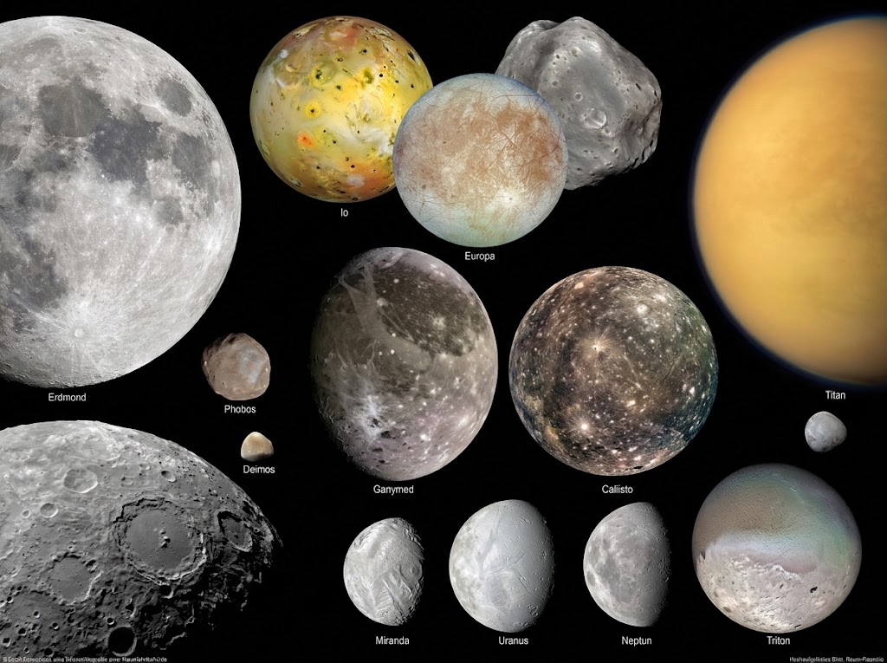

Mond

Der Mond ist mit einem Durchmesser von 3.474 Kilometern der fünftgrößte Mond des Sonnensystems und der einzige natürliche Satellit der Erde. Bei einer durchschnittlichen Entfernung von etwa 384.400 Kilometern benötigt er für eine Umkreisung rund 27,3 Tage.
Erds natürlicher Begleiter
Der Mond ist der einzige natürliche Satellit der Erde. Seine markante Oberfläche, die von tiefen Kratern, Bergen und dunklen Vulkanebenen (Maria) geprägt ist, macht ihn zu einem faszinierenden Blickfang an unserem Nachthimmel und zum ständigen Begleiter unseres Planeten.
Monde

Monde sind natürliche Satelliten, die Planeten umkreisen. Einige Planeten besitzen viele Monde, etwa Jupiter und Saturn. Der Erdmond beeinflusst unter anderem die Gezeiten auf der Erde.
Viele Monde zeigen geologische Aktivität und liefern Hinweise auf die Entstehung des Sonnensystems.